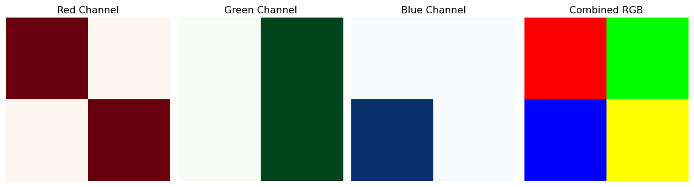
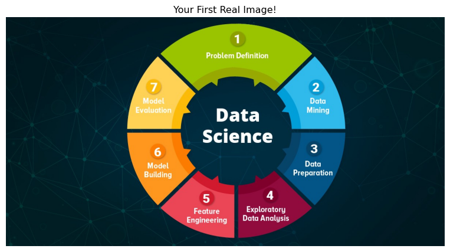
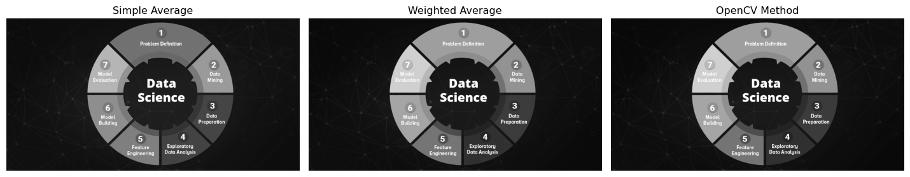

Remember when you first learned that music could be stored as numbers? Or that your favorite movie is just a sequence of 1s and 0s? Well, prepare for another “mind-blown” moment: every image you’ve ever seen is just a big table of numbers.
That sunset photo from your vacation? Numbers. Your profile picture? Numbers. The Mona Lisa? You guessed it—numbers!
Let’s dive into this digital rabbit hole and discover how computers really see the world.
0.2 The Pixel Story: Meet the Building Blocks
Imagine you’re creating a mosaic with tiny colored tiles. Each tile is a single color, and when you step back, all these tiles together form a beautiful picture. In the digital world, these tiles are called pixels (short for “picture elements”).
0.2.1 Your First Digital Image
Let’s create the world’s tiniest image—just 3×3 pixels:
Code
import numpy as npimport matplotlib.pyplot as plt# Create a tiny 3x3 grayscale imagetiny_image = np.array([ [0, 128, 255], [64, 192, 128], [255, 64, 0 ]])print("Our tiny image as numbers:")print(tiny_image)print(f"\nImage shape: {tiny_image.shape}")print(f"Image data type: {tiny_image.dtype}")
Now let’s see what this looks like as an actual image:
Code
plt.figure(figsize=(8, 4))# Show the numbersplt.subplot(1, 2, 1)plt.imshow(tiny_image, cmap='gray', interpolation='nearest')plt.title("What You See")for i inrange(3):for j inrange(3): plt.text(j, i, str(tiny_image[i, j]), ha='center', va='center', color='red', fontweight='bold')plt.colorbar()# Show as imageplt.subplot(1, 2, 2)plt.imshow(tiny_image, cmap='gray', interpolation='nearest')plt.title("Just the Image")plt.colorbar()plt.tight_layout()plt.show()
But wait—what about color images? Here’s where it gets interesting. Color images are like having three grayscale images stacked on top of each other:
Red layer: How much red is in each pixel
Green layer: How much green is in each pixel
Blue layer: How much blue is in each pixel
Think of it like making a sandwich with three transparent colored sheets!
Code
# Create a simple 2x2 color imagecolor_image = np.array([ [[255, 0, 0], [0, 255, 0]], # Red pixel, Green pixel [[0, 0, 255], [255, 255, 0]] # Blue pixel, Yellow pixel])print("Color image shape:", color_image.shape)print("This means: 2 rows, 2 columns, 3 color channels")plt.figure(figsize=(12, 4))# Show each color channelchannels = ['Red', 'Green', 'Blue']colors = ['Reds', 'Greens', 'Blues']for i inrange(3): plt.subplot(1, 4, i+1) plt.imshow(color_image[:, :, i], cmap=colors[i]) plt.title(f"{channels[i]} Channel") plt.axis('off')# Show the combined imageplt.subplot(1, 4, 4)plt.imshow(color_image)plt.title("Combined RGB")plt.axis('off')plt.tight_layout()plt.show()
Color image shape: (2, 2, 3)
This means: 2 rows, 2 columns, 3 color channels

0.4 Loading Your First Real Image
Enough with toy examples! Let’s load a real photograph and explore it:
Code
import cv2# Load an image (you can upload your own to Colab!)img = cv2.imread('images/image.jpg')# OpenCV loads images in BGR format, let's convert to RGBimg_rgb = cv2.cvtColor(img, cv2.COLOR_BGR2RGB)print(f"Image shape: {img_rgb.shape}")print(f"Image size: {img_rgb.size} pixels")print(f"Data type: {img_rgb.dtype}")# Display the imageplt.figure(figsize=(10, 6))plt.imshow(img_rgb)plt.title("Your First Real Image!")plt.axis('off')plt.show()# Let's examine a small patchpatch = img_rgb[100:110, 100:110] # 10x10 pixel patchprint(f"\nA small 10x10 patch from the image:")print(f"Shape: {patch.shape}")print(f"First pixel RGB values: {patch[0, 0]}")
Image shape: (627, 1200, 3)
Image size: 2257200 pixels
Data type: uint8
A small 10x10 patch from the image:
Shape: (10, 10, 3)
First pixel RGB values: [ 2 31 37]

0.5 The Magic of Image Operations
Now that we understand images as numbers, we can do mathematical operations on them! This is where the fun begins.
0.5.1 Making Images Brighter or Darker
Code
# Load and prepare imageimg = cv2.imread('images/image.jpg')img_rgb = cv2.cvtColor(img, cv2.COLOR_BGR2RGB)# Make it brighter (add to all pixels)brighter = np.clip(img_rgb +50, 0, 255).astype(np.uint8)# Make it darker (subtract from all pixels) darker = np.clip(img_rgb -50, 0, 255).astype(np.uint8)# Show the resultsplt.figure(figsize=(15, 5))plt.subplot(1, 3, 1)plt.imshow(darker)plt.title("Darker (-50)")plt.axis('off')plt.subplot(1, 3, 2)plt.imshow(img_rgb)plt.title("Original")plt.axis('off')plt.subplot(1, 3, 3)plt.imshow(brighter)plt.title("Brighter (+50)")plt.axis('off')plt.tight_layout()plt.show()
Converting to grayscale is one of the most common operations in computer vision. But it’s not just about averaging the RGB values—there’s a secret formula!
Code
# Method 1: Simple average (not the best)gray_simple = np.mean(img_rgb, axis=2).astype(np.uint8)# Method 2: Weighted average (the right way!)# Human eyes are more sensitive to green, less to bluegray_weighted = (0.299* img_rgb[:, :, 0] +0.587* img_rgb[:, :, 1] +0.114* img_rgb[:, :, 2]).astype(np.uint8)# Method 3: Using OpenCV (does the weighted average for us)gray_opencv = cv2.cvtColor(img, cv2.COLOR_BGR2GRAY)plt.figure(figsize=(15, 5))plt.subplot(1, 3, 1)plt.imshow(gray_simple, cmap='gray')plt.title("Simple Average")plt.axis('off')plt.subplot(1, 3, 2)plt.imshow(gray_weighted, cmap='gray')plt.title("Weighted Average")plt.axis('off')plt.subplot(1, 3, 3)plt.imshow(gray_opencv, cmap='gray')plt.title("OpenCV Method")plt.axis('off')plt.tight_layout()plt.show()

0.7 Fun with Image Arithmetic
Since images are just arrays, we can do all sorts of mathematical operations:
Remember: You’ve just learned to see the world the way computers do. That’s no small feat! In the next post, we’ll use this knowledge to build amazing things with OpenCV.
Reuse
CC BY-NC-SA 4.0
Citation
BibTeX citation:
@online{2025,
author = {, Hasan},
title = {Images as {Data:} {How} {Computers} {See} the {World}},
date = {2025-01-16},
url = {https://hasangoni.quarto.pub/hasan-blog-post/posts/series/cv-foundations/02-images-as-data.html},
langid = {en}
}
---title: "Images as Data: How Computers See the World"author: "Hasan"date: 2025-01-16categories: [computer-vision, numpy, matplotlib, basics]tags: [pixels, arrays, python, hands-on]image: "https://images.unsplash.com/photo-1518709268805-4e9042af2176?ixlib=rb-4.0.3&ixid=M3wxMjA3fDB8MHxwaG90by1wYWdlfHx8fGVufDB8fHx8fA%3D%3D&auto=format&fit=crop&w=2025&q=80"toc: trueseries: name: "Computer Vision Foundations" number: 2format: html: defaultjupyter: python3---## The Great Revelation: Everything is Numbers!Remember when you first learned that music could be stored as numbers? Or that your favorite movie is just a sequence of 1s and 0s? Well, prepare for another "mind-blown" moment: **every image you've ever seen is just a big table of numbers.**That sunset photo from your vacation? Numbers. Your profile picture? Numbers. The Mona Lisa? You guessed it‚Äînumbers!Let's dive into this digital rabbit hole and discover how computers really see the world.## The Pixel Story: Meet the Building BlocksImagine you're creating a mosaic with tiny colored tiles. Each tile is a single color, and when you step back, all these tiles together form a beautiful picture. In the digital world, these tiles are called **pixels** (short for "picture elements").### Your First Digital ImageLet's create the world's tiniest image‚Äîjust 3×3 pixels:```{python}#| eval: trueimport numpy as npimport matplotlib.pyplot as plt# Create a tiny 3x3 grayscale imagetiny_image = np.array([ [0, 128, 255], [64, 192, 128], [255, 64, 0 ]])print("Our tiny image as numbers:")print(tiny_image)print(f"\nImage shape: {tiny_image.shape}")print(f"Image data type: {tiny_image.dtype}")```Now let's see what this looks like as an actual image:```{python}#| eval: trueplt.figure(figsize=(8, 4))# Show the numbersplt.subplot(1, 2, 1)plt.imshow(tiny_image, cmap='gray', interpolation='nearest')plt.title("What You See")for i inrange(3):for j inrange(3): plt.text(j, i, str(tiny_image[i, j]), ha='center', va='center', color='red', fontweight='bold')plt.colorbar()# Show as imageplt.subplot(1, 2, 2)plt.imshow(tiny_image, cmap='gray', interpolation='nearest')plt.title("Just the Image")plt.colorbar()plt.tight_layout()plt.show()```**üéØ Try this!** [Open in Colab](https://colab.research.google.com/github/hasanpasha/quarto_blog_hasan/blob/main/notebooks/cv-foundations-02-images-as-data.ipynb)## The Color Mystery: RGB RevealedBut wait‚Äîwhat about color images? Here's where it gets interesting. Color images are like having three grayscale images stacked on top of each other:- **Red layer**: How much red is in each pixel- **Green layer**: How much green is in each pixel - **Blue layer**: How much blue is in each pixelThink of it like making a sandwich with three transparent colored sheets!```{python}#| eval: true# Create a simple 2x2 color imagecolor_image = np.array([ [[255, 0, 0], [0, 255, 0]], # Red pixel, Green pixel [[0, 0, 255], [255, 255, 0]] # Blue pixel, Yellow pixel])print("Color image shape:", color_image.shape)print("This means: 2 rows, 2 columns, 3 color channels")plt.figure(figsize=(12, 4))# Show each color channelchannels = ['Red', 'Green', 'Blue']colors = ['Reds', 'Greens', 'Blues']for i inrange(3): plt.subplot(1, 4, i+1) plt.imshow(color_image[:, :, i], cmap=colors[i]) plt.title(f"{channels[i]} Channel") plt.axis('off')# Show the combined imageplt.subplot(1, 4, 4)plt.imshow(color_image)plt.title("Combined RGB")plt.axis('off')plt.tight_layout()plt.show()```## Loading Your First Real ImageEnough with toy examples! Let's load a real photograph and explore it:```{python}#| eval: trueimport cv2# Load an image (you can upload your own to Colab!)img = cv2.imread('images/image.jpg')# OpenCV loads images in BGR format, let's convert to RGBimg_rgb = cv2.cvtColor(img, cv2.COLOR_BGR2RGB)print(f"Image shape: {img_rgb.shape}")print(f"Image size: {img_rgb.size} pixels")print(f"Data type: {img_rgb.dtype}")# Display the imageplt.figure(figsize=(10, 6))plt.imshow(img_rgb)plt.title("Your First Real Image!")plt.axis('off')plt.show()# Let's examine a small patchpatch = img_rgb[100:110, 100:110] # 10x10 pixel patchprint(f"\nA small 10x10 patch from the image:")print(f"Shape: {patch.shape}")print(f"First pixel RGB values: {patch[0, 0]}")```## The Magic of Image OperationsNow that we understand images as numbers, we can do mathematical operations on them! This is where the fun begins.### Making Images Brighter or Darker```{python}#| eval: true# Load and prepare imageimg = cv2.imread('images/image.jpg')img_rgb = cv2.cvtColor(img, cv2.COLOR_BGR2RGB)# Make it brighter (add to all pixels)brighter = np.clip(img_rgb +50, 0, 255).astype(np.uint8)# Make it darker (subtract from all pixels) darker = np.clip(img_rgb -50, 0, 255).astype(np.uint8)# Show the resultsplt.figure(figsize=(15, 5))plt.subplot(1, 3, 1)plt.imshow(darker)plt.title("Darker (-50)")plt.axis('off')plt.subplot(1, 3, 2)plt.imshow(img_rgb)plt.title("Original")plt.axis('off')plt.subplot(1, 3, 3)plt.imshow(brighter)plt.title("Brighter (+50)")plt.axis('off')plt.tight_layout()plt.show()```### Playing with Individual Color Channels```{python}#| eval: true# Create different color effectsred_only = img_rgb.copy()red_only[:, :, 1] =0# Remove greenred_only[:, :, 2] =0# Remove bluegreen_only = img_rgb.copy()green_only[:, :, 0] =0# Remove redgreen_only[:, :, 2] =0# Remove blueblue_only = img_rgb.copy()blue_only[:, :, 0] =0# Remove redblue_only[:, :, 1] =0# Remove green# Display the resultsplt.figure(figsize=(15, 5))plt.subplot(1, 3, 1)plt.imshow(red_only)plt.title("Red Channel Only")plt.axis('off')plt.subplot(1, 3, 2)plt.imshow(green_only)plt.title("Green Channel Only")plt.axis('off')plt.subplot(1, 3, 3)plt.imshow(blue_only)plt.title("Blue Channel Only")plt.axis('off')plt.tight_layout()plt.show()```## The Grayscale TransformationConverting to grayscale is one of the most common operations in computer vision. But it's not just about averaging the RGB values‚Äîthere's a secret formula!```{python}#| eval: true# Method 1: Simple average (not the best)gray_simple = np.mean(img_rgb, axis=2).astype(np.uint8)# Method 2: Weighted average (the right way!)# Human eyes are more sensitive to green, less to bluegray_weighted = (0.299* img_rgb[:, :, 0] +0.587* img_rgb[:, :, 1] +0.114* img_rgb[:, :, 2]).astype(np.uint8)# Method 3: Using OpenCV (does the weighted average for us)gray_opencv = cv2.cvtColor(img, cv2.COLOR_BGR2GRAY)plt.figure(figsize=(15, 5))plt.subplot(1, 3, 1)plt.imshow(gray_simple, cmap='gray')plt.title("Simple Average")plt.axis('off')plt.subplot(1, 3, 2)plt.imshow(gray_weighted, cmap='gray')plt.title("Weighted Average")plt.axis('off')plt.subplot(1, 3, 3)plt.imshow(gray_opencv, cmap='gray')plt.title("OpenCV Method")plt.axis('off')plt.tight_layout()plt.show()```## Fun with Image ArithmeticSince images are just arrays, we can do all sorts of mathematical operations:```{python}#| eval: true# Create a simple patternrows, cols = img_rgb.shape[:2]x_gradient = np.linspace(0, 255, cols).astype(np.uint8)y_gradient = np.linspace(0, 255, rows).astype(np.uint8)# Create gradient patternshorizontal_gradient = np.tile(x_gradient, (rows, 1))vertical_gradient = np.tile(y_gradient.reshape(-1, 1), (1, cols))plt.figure(figsize=(15, 5))plt.subplot(1, 3, 1)plt.imshow(horizontal_gradient, cmap='gray')plt.title("Horizontal Gradient")plt.axis('off')plt.subplot(1, 3, 2)plt.imshow(vertical_gradient, cmap='gray')plt.title("Vertical Gradient")plt.axis('off')# Combine gradientscombined = (horizontal_gradient + vertical_gradient) //2plt.subplot(1, 3, 3)plt.imshow(combined, cmap='gray')plt.title("Combined Gradients")plt.axis('off')plt.tight_layout()plt.show()```## Your First Image Filter: The Blur EffectLet's create a simple blur effect by averaging neighboring pixels:```{python}#| eval: truedef simple_blur(image, kernel_size=5):"""Apply a simple blur by averaging neighboring pixels""" blurred = np.zeros_like(image) offset = kernel_size //2for i inrange(offset, image.shape[0] - offset):for j inrange(offset, image.shape[1] - offset):# Average the pixels in the kernel area neighborhood = image[i-offset:i+offset+1, j-offset:j+offset+1] blurred[i, j] = np.mean(neighborhood)return blurred# Apply our blur to a grayscale imagegray_img = cv2.cvtColor(img, cv2.COLOR_BGR2GRAY)blurred_img = simple_blur(gray_img)plt.figure(figsize=(12, 6))plt.subplot(1, 2, 1)plt.imshow(gray_img, cmap='gray')plt.title("Original")plt.axis('off')plt.subplot(1, 2, 2)plt.imshow(blurred_img, cmap='gray')plt.title("Our Custom Blur")plt.axis('off')plt.tight_layout()plt.show()```## The Big Picture: What We've Learnedüéâ **Congratulations!** You've just unlocked one of the most important concepts in computer vision. Here's what you now know:1. **Images are arrays of numbers** (0-255 for each pixel)2. **Grayscale images** are 2D arrays (height × width)3. **Color images** are 3D arrays (height × width × 3 channels)4. **Image processing** is just mathematical operations on these arrays5. **You can create effects** by manipulating pixel values## Practical ExercisesBefore moving to the next post, try these fun experiments:### üéØ **Exercise 1: Create Your Own Pattern**```{python}#| eval: true# Create a checkerboard patternsize =200checkerboard = np.zeros((size, size))square_size =25for i inrange(0, size, square_size):for j inrange(0, size, square_size):if (i // square_size + j // square_size) %2==0: checkerboard[i:i+square_size, j:j+square_size] =255plt.imshow(checkerboard, cmap='gray')plt.title("Checkerboard Pattern")plt.axis('off')plt.show()```### üéØ **Exercise 2: Image Negative**```{python}#| eval: true# Create a negative effect (like old film negatives)negative =255- img_rgbplt.figure(figsize=(12, 6))plt.subplot(1, 2, 1)plt.imshow(img_rgb)plt.title("Original")plt.axis('off')plt.subplot(1, 2, 2)plt.imshow(negative)plt.title("Negative")plt.axis('off')plt.tight_layout()plt.show()```## What's Coming Next?In our next adventure, [**"OpenCV Essentials: Your First Computer Vision Toolkit"**](../03-opencv-essentials/), we'll:- Master the essential OpenCV functions- Learn to resize, crop, and rotate images like a pro- Build our first interactive image viewer- Create a simple photo editorThe best part? Everything we've learned about images as numbers will make OpenCV operations crystal clear!## Key Takeaways- **Images = Numbers**: Every pixel is just a number (or three numbers for color)- **Shape Matters**: Always check `image.shape` to understand your data- **Math is Magic**: Simple arithmetic creates powerful visual effects- **Start Simple**: Complex algorithms are built from these basic operations:::{.callout-tip}## Hands-On PracticeReady to experiment? Try the full interactive notebook: [**Images as Data - Interactive Lab**](https://colab.research.google.com/drive/1AbCdEfGhIjKlMnOpQrStUvWxYz123456)Upload your own photos and see them transform into numbers!::::::{.callout-note}## Series Navigation- **Previous**: [Why Computer Vision?](01-why-computer-vision.qmd)- **Next**: [OpenCV Essentials: Your First Computer Vision Toolkit](03-opencv-essentials.qmd)- **Series Home**: [Computer Vision Foundations](../computer-vision-foundations.qmd):::---*Remember: You've just learned to see the world the way computers do. That's no small feat! In the next post, we'll use this knowledge to build amazing things with OpenCV.*